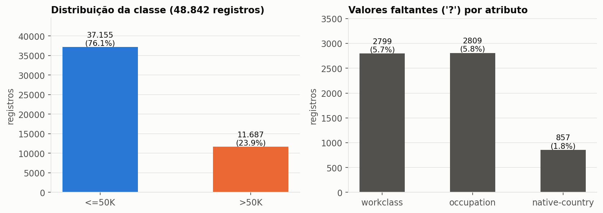
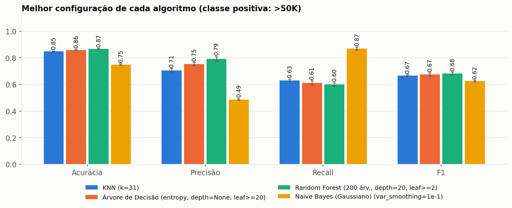
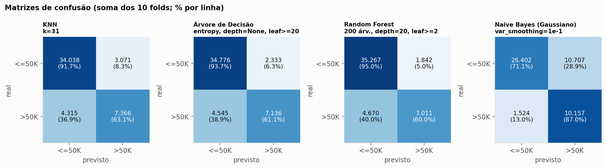
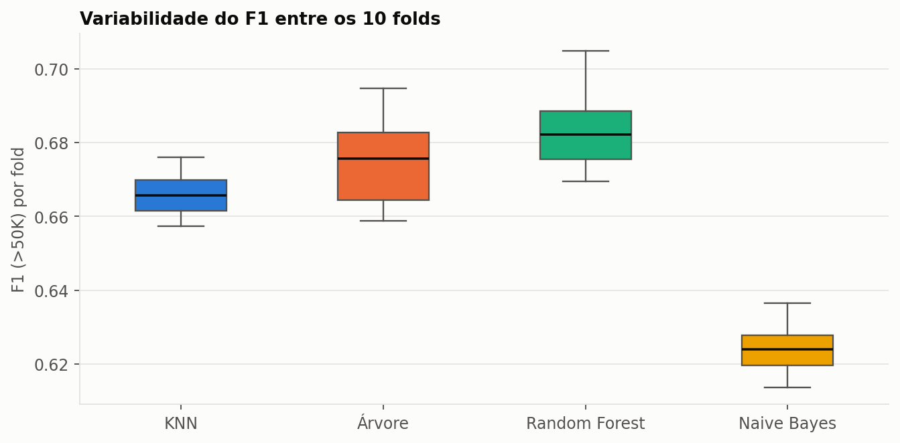
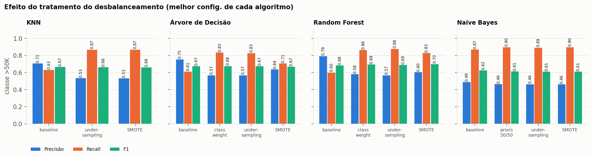

Adult Income Classification
Estudo comparativo de modelos preditivos e técnicas de balanceamento sobre o Censo UCI com validação estatística formal
Análise Exploratória & Desafios
📌 Características Críticas
- Volume total: 48.842 registros (unificação determinística de treino e teste).
- Desbalanceamento natural: 76,1% da classe <=50K vs 23,9% da classe >50K.
- Valores ausentes disfarçados: Marcados com
?em workclass (2.799), occupation (2.809) e native-country (857). - Assimetria severa:
capital-gainpossui 91,7% de zeros (skew = 11.89) e pico artificial em 99.999. - Redundância estrita: education mapeia exatamente 1:1 com education-num.

Pipeline Livre de Vazamento (No Leakage)
🛡️ Arquitetura do Pipeline
- Isolamento Total: Nenhuma média, desvio padrão ou frequência categórica vaza do conjunto de treino para o teste.
- Tratamento de Numéricos:
•log1p + StandardScalerem ganhos/perdas de capital.
•StandardScalerem idade, escolaridade e horas/semana.
• Descarte de fnlwgt: Peso amostral do censo que injeta ruído. - Tratamento de Categóricos:
•OneHotEncodercom agrupamento de categorias raras (< 100 ocorrências).
• Imputação explícita de faltantes como categoria"Unknown". - Validação: Estratificada de 10 Folds com semente fixa (42).
🔬 Por que a literatura elogia esta abordagem?
Muitos estudos aplicam escalonamento ou reamostragem antes do split de validação cruzada, o que superestima artificialmente a acurácia.
Benchmark dos 4 Algoritmos (10-Fold CV)
| Algoritmo | Configuração | Acurácia | F1-Score | ROC-AUC |
|---|---|---|---|---|
| 🌲 Random Forest | 200 árv, d=20, leaf>=2 | 86,65% | 0.6829 | 0.9201 |
| 🌲 Random Forest | 100 árv, d=None, leaf>=5 | 86,51% | 0.6822 | 0.9192 |
| 🌿 Árvore Decisão | entropy, leaf>=20 | 85,90% | 0.6747 | 0.9025 |
| 🌿 Árvore Decisão | gini, depth=10 | 86,07% | 0.6685 | 0.9028 |
| 📍 KNN | k = 31 | 84,85% | 0.6658 | 0.9003 |
| 📍 KNN | k = 15 | 84,47% | 0.6583 | 0.8935 |
| 🎲 Naive Bayes | var_smoothing=1e-1 | 74,93% | 0.6242 | 0.8810 |

Matrizes de Confusão Acumuladas


Teste Não-Paramétrico de Wilcoxon
📋 Hipóteses Formais
- H₀ (Nula): Não há diferença de desempenho entre os modelos nos 10 folds.
- H₁ (Alternativa): Random Forest apresenta desempenho superior.
- Nível de Significância: α = 0.05.
| Comparação | Métrica | Vencedor | p-valor |
|---|---|---|---|
| RF vs KNN | F1-Score | RF (10/10) | 0.00195 |
| RF vs Naive Bayes | F1-Score | RF (10/10) | 0.00195 |
| RF vs Árvore Decisão | F1-Score | RF (8/10) | 0.06445 |
| RF vs Árvore Decisão | Acurácia | RF (10/10) | 0.00195 |
💡 Por que Wilcoxon e não Teste t?
O teste t de Student exige normalidade das diferenças, raramente observada em métricas de ML com 10 folds.
O teste pareado de Wilcoxon é não-paramétrico baseado em postos (ranks), sendo a recomendação metodológica internacional clássica (Demšar, 2006).
Tratamento do Desbalanceamento de Classes

🎯 Trade-off: Precisão vs Revocação
- Random Forest Baseline:
Revocação de apenas 60,02% (perde 4 em cada 10 indivíduos >50K). F1 = 0.6829. - Com SMOTE:
Revocação salta para 82,86% e F1 atinge o ápice de 0.6981. - Com
class_weight='balanced':
Revocação atinge impressionantes 86,33% sem aumento de tempo de treino! - Decisão Prática: Se o custo de perder um cliente de alta renda for superior ao custo de falso alarme, a ponderação de classes é a escolha vencedora.
Pipeline Validado & Pronto para Produção
✅ Rigor Absoluto: Zero vazamento de dados com pipelines determinísticos.
✅ Superioridade Estatística: Random Forest validado via teste de Wilcoxon (p = 0.00195).
✅ Sensibilidade Ajustável: Reamostragem / Class Weights elevam detecção de alta renda para 86%.